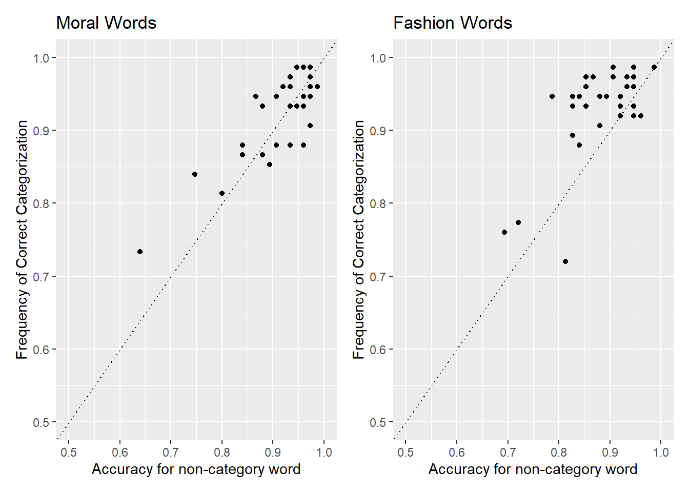
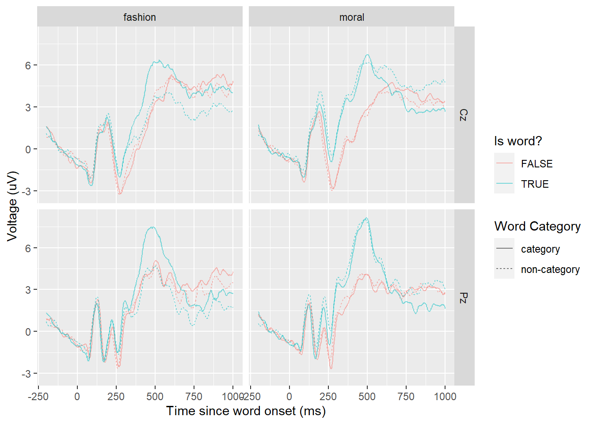

Replication [Draft]
Introduction
This is a replication of the study by Gantman et al (2020). Replication studies play a crucial role in ensuring the reliability and valor of scientific findings. By conducting replications, researchers can assess the generality of previous results and confirm replicability. Replications also serve to identify potential sources of variation and confounding factors. In this study, we aim to replicate the findings of Gantman et al. (2020), who investigated the “moral pop-out effect” using event-related potentials (ERPs).
The moral pop-out effect suggests that the “morality” of a visual stimulus is prioritized in the early stages of perception, leading to faster recognition of moral words compared to non-moral words. Gantman et al. (2020) found marginal support for this effect, with participants responding slightly faster to moral words than non-moral words, although the difference was not statistically significant. They also observed that moral and non-moral words were distinguishable from one another as early as 300 ms after word presentation.
However, it remains unclear whether this effect is specific to the moral domain or if it the observed effect could instead be explained by semantic priming resulting from seeing moral words repeatedly throughout the experiment. To account for this potential confound, we aim to replicate the study by incorporating an additional category of fashion words, as suggested by Firestone and Scholl (2015). If the pop-out effect holds true, we expect to replicate the behavioral and ERP effects for moral but not fashion words. By including this control condition and directly comparing moral and fashion words, this study aims to provide a more comprehensive understanding of the intricacies and nature of the moral pop-out effect and ensure the robustness of the original findings.
Methods
Participants
46 native English-speaking Vassar College students participated in this study. Participants were aged 18 years or older and had normal or corrected vision and provided informed consent prior to the experiment. Participants were compensated with $20 and in some cases, course credit upon completion of experiment. This study was approved by the Vassar College Institutional Review Board. After applying the exclusion criteria, 34 subjects remain. 7 subjects were excluded for receiving fashion words twice due to a technical error, 1 subject was excluded for having poor EEG recordings, 0 were excluded for failing to reply more than 50% of trials and 0 were excluded for having a non-word response greater than 90%.
Materials
The experiment was designed using jsPsych(www.jspsych.org) and utilized subsets of stimuli (word lists) from Gantman et al. (2020) and Firestone and Scholl (2015). The stimuli consisted of eight distinct categories: non-moral words, moral words, non-moral non-words, moral non-words, fashion words, fashion non-words, non-fashion words, and non-fashion non-words. Non-words were created by scrambling the letters of corresponding words.
The experiment was conducted using and ASUS VG248QE monitor with full HD 1080p resolution and a 144hz refresh rate. Participants used a Lenovo SK-8825 (L) wired black USB keyboard for response inputs. EEG data was recorded using a CGX Quick-20r wireless, battery-operated, full standard 10-20 montage EEG headset with dry sensor technology, sampling at 500Hz with 24-bit resolution. A CGX Wireless Stim Trigger was used for 16-bit simultaneous event marking with millisecond precision.
Procedure
Participants completed the experiment individually in 90 minute sessions (approx. 20 minutes in EEG) in a dimly lit room. The experiment began with 20 practice trials of 10 non-moral words and 10 non-moral non-words with decreasing intervals of 300, 100, 60, 30, 16ms. Participants were instructed to sit 60cm away from the screen and rest their arms in a comfortable position.
The main experiment consisted of two blocks of trials, each containing 300 trials (75 words and 75 non-words for each category), for a total of 600 trials. The order of the blocks (Block A: moral or fashion first) is randomly determined for each participant. Participants had a short break after every 100 trials.
Each trial followed the same structure:
- Fixation screen presented for 400-700ms
- Stimulus (letter string) presented for 16.6ms
- Fixation screen presented for 33.33ms
- Backward mask of ampersands (&) corresponding to the number of letters in the word, presented for 25ms
- Blank screen presented for 1500ms for participant response
Participants pressed the ‘1’ key if the string of letters appeared as a word and the ‘5’ key if it appeared as a non-word.
EEG Data was recorded from the Cz and Pz electrode, with additional sensors placed at C3, C4, P3, P4, Fz, F3, F4.
OSF Project and Preregistration
A preregistration for this study, stimuli and experiment scripts are available on the Open Science Framework at https://osf.io/9ygfj/.
Results
Behavioral
A pop-out effect was found for fashion words, but not moral words.
In the moral condition, participants were 0.927451% accurate for moral words and 0.9164706% accurate for non-moral words. This difference was not statistically significant in the GEE model, β = -0.1528463, SE = 0.0925247, z = -1.651952, p = 0.0985443.
In the fashion condition, participants were 0.9290196% accurate for fashion words and 0.8835294% accurate for non-fashion words. This difference was not statistically significant in the GEE model, β = -0.5454404, SE = 0.1167027, z = -4.6737609, p = 2.9573357^{-6}.
EEG

Words vs. Non-Words
Following Gantman et al. (2020), we looked for word vs. non-word ERP effects at each time window at electrode Pz.
In the moral condition, words elicited a more positive ERP in the P2 window (β = 1.1811568, SE = 0.417889, z = 2.8264844, p = 0.0047062), N2 window (β = 2.1686034, SE = 0.4317908, z = 5.0223471, p = 5.1043823^{-7}), P3 window (β = 2.8105816, SE = 0.4912493, z = 5.7212939, p = 1.0571585^{-8}), and LPP window (β = -0.3005976, SE = 0.553326, z = -0.5432559, p = 0.5869536).
In the fashion condition, there was no significant difference in any of the time windows; P2 window (β = 0.4811835, SE = 0.476276, z = 1.0103038, p = 0.3123498), N2 window (β = 1.0654641, SE = 0.4815555, z = 2.2125466, p = 0.0269289), P3 window (β = 2.0034461, SE = 0.5402891, z = 3.7081005, p = 2.0881982^{-4}), and LPP window (β = -0.5776117, SE = 0.6061505, z = -0.9529179, p = 0.3406316).
Pop-out effects
Also following Gantman et al. (2020), we looked for ERP differences related to the category vs. non-category distinction in all four time windows at electrode Cz.
In the moral condition, there were no significant differences between moral and non-moral words in the P2 window (β = 0.0300243, SE = 0.3142755, z = 0.0955348, p = 0.92389), N2 window (β = 0.1524485, SE = 0.3240468, z = 0.4704523, p = 0.6380319), P3 window (β = 0.1170814, SE = 0.3763191, z = 0.3111228, p = 0.7557073), and LPP window (β = 0.3376174, SE = 0.4264656, z = 0.7916639, p = 0.4285567).
In the fashion condition, the fashion words elicited a more positive ERP than non-fashion words in the P3 (β = -0.7862622, SE = 0.5077601, z = -1.5484914, p = 0.121504). There was no significant difference in the P2 window (β = -0.0617087, SE = 0.4267863, z = -0.1445893, p = 0.8850351), N2 window (β = 0.0933452, SE = 0.4479022, z = 0.2084052, p = 0.8349126), and LPP window (β = -0.920732, SE = 0.5855168, z = -1.5725117, p = 0.1158319).
Discussion
This replication study aimed to assess the generality and robustness of the moral pop-out effect as reported by Gantman et al. (2020), while taking into account potential confounding factors such as semantic priming. Our results provide partial support, with some notable differences.
Consistent with Gantman et al., we found evidence of a pop-out effect for fashion words but not for moral words in the behavioral data, with participants responding more accurately to fashion words compared to non-fashion words. However, contrary to the original study, a similar effect was not observed for moral words.
Our ERP results provide partial support for the moral pop-out effect, with moral words eliciting enhanced P2, N2, and P3 components compared to non-moral words.
One notable difference between our study and Gantman et al. is the overall accuracy. Participants in our sutdy responsed much more accurately in our study (~90%) compared to Gantman et al. (~70%). We later discovered this was due to a procedural change where stimuli were presented for a longer duration that the original study. This may have reduced the sensitivity of the task to detect significance between conditions. Taken together, our partial replication of Gantman et al (2020) suggests that while moral words may be processed differently than non-moral words under certain conditions, this ‘pop-out effect’ is likely due to procedural variations and merits further research. Furthermore, this replication highlights the importance of carefully understanding procedures when attempting to replicate an effect.
Limitations
It is important to acknowledge the limitations of our study and consider how it might inform future research. First, our sample consisted entirely of college students from a single institution, which may limit the generalizability of the findings, despite being similar to the participant demographic used by Gantman et al. (2020). Second, while we aimed to control potential confounds, such as semantic priming, there may be other factors that could influence the pop-out effect. Additionally, this study focused on a specific set of moral and fashion words. To further delve into the generalizability of the pop-out effect, future studies could utilize a wider range of stimuli (perhaps testing the pop-out effect in a study with more than 2 categories), with varying semantic categories and stimulus types (e.g, other forms of stimulus such as sound or images and diverse categories). Finally, and as mentioned previously, our analysis is limited due to the procedural misunderstanding that led to the experiment not being accurately replicated in design. Future iterations of this research should take this into account.
Ultimately, our study contributes to the ongoing debate about the nature of moral perception. These findings highlight the importance of replication and call attention to the importance for careful control of procedural variables.
References
Firestone, C. & Scholl, B. (2015). Enhanced visual awareness for morality and pajamas? Perception vs. memory in ‘top-down’ effects. Cognition, 136, 409-416.
Gantman, A., Devraj-Kizuk, S., Mende-Siedlecki, P., Van Bavel, J., & Mathewson, K. (2020). The time course of moral perception: an ERP investigation of the moral pop-out effect. Social Cognitive and Affective Neuroscience, 15(2), 235-246.